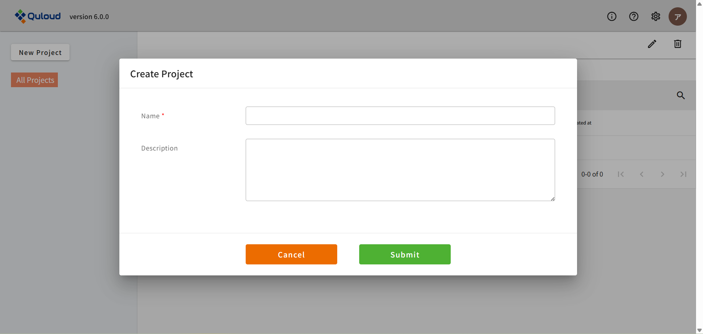

1. ダッシュボード（トップ画面）
下図は Quloud のログイン直後の画面です。これから計算を始めていくにあたって重要な要素として、 Projects，Materials，Jobs があります。
1.1. Projects
Quloud では、材料のモデリングやシミュレーションは Project の中で行われます。そしてそれぞれの Project の中に、Material や Job が配置されます。 Material はモデリングを行う場所、Job はシミュレーションを行う場所です。
画面左上にある「New Project」をクリックすると、下図のようなメニューが開きます。 「Name」に Project の名前を入力し、「Submit」をクリックすれば、新しい Project が作成できます。
Project が増えると、画面左上の「All Projects」をクリックしたとき、例えば下図のように Project の一覧が表示されるので、 使用したい Project をクリックすれば、その Project に切り替わるようになっています。 Project を切り替えると、画面上部に選択中の Project の名前（ここでは "Project_1" ）が表示されます。 このとき、Material や Job は、 その Project に登録されているものだけが表示されるようになるので、データの整理等に利用できます。

Project の重要な機能として、例えば Project 内の Material から Job を作ると、 その Job も自動的に Project のメンバーとして登録されるというものがあります。 （ただし元になった Material が複数の Project に属していたとしても、そこから派生した Job は、 現在選択中の Project にのみ、自動的に登録されます。）
また、 Project を削除すると、配下にある Material や Job もすべて削除されてしまうのでご注意ください。
1.2. Materials
Project の名前の下にある「Materials」と「Jobs」のうち、左の「Materials」をクリックし、 右側の「＋」のアイコンをクリックすると、次のようなメニューが開きます。

ここでは計算したい物質の原子座標ファイルを登録します。 「Atomic Structures」のメニュー内には３つのボタンがあり、それぞれ
結晶構造データベース（Materials Project）で検索＆取得
分子構造データベース（PubChem）で検索＆取得
手持ちのファイルをアップロードする
という登録方法に対応しています。データベース検索の方法等については後述することにして、 とにかく原子座標ファイルが登録できたら、下記のように、 最初の画面の「Materials」の欄に登録した情報が追加されます。

1.3. Jobs（未改訂）
登録したMATERIALをダブルクリックする（またはメニューを開いて「Show Detail」のボタンをクリックする）と、 次のような、そのMATERIAL専用の画面に移動することができます。

この画面から、原子構造のモデリングを行ったり、各種計算を行ったりすることができます。 これらをQuloudでは「JOBS」というデータとして登録します。
具体的なモデリングや計算設定の方法については後述することにして、ここでは例として、 Siのバンド計算のジョブ作成と、コンベンショナルセル（立方体セル）にするモデリングを実行したとします。 すると、以下のように、最初の画面の「JOBS」の欄にデータが２つ追加されるのがわかります。